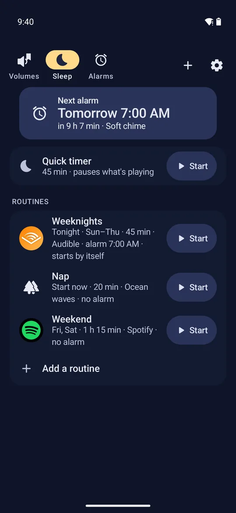
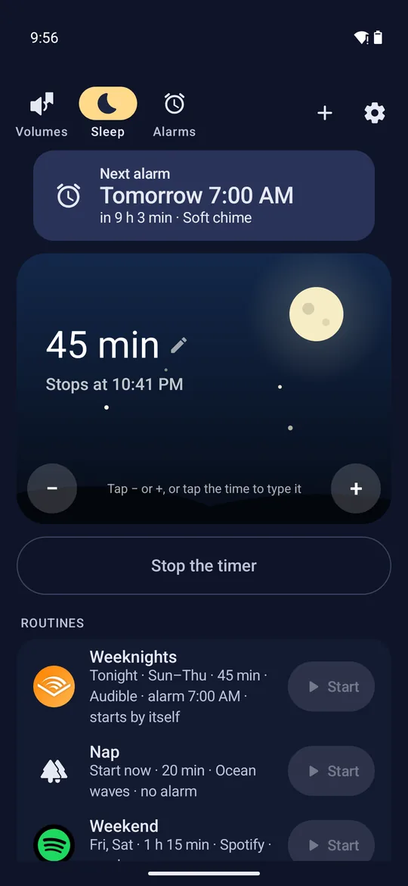
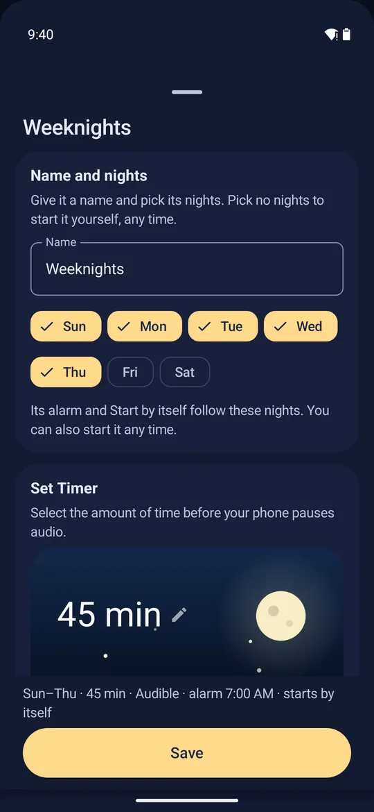
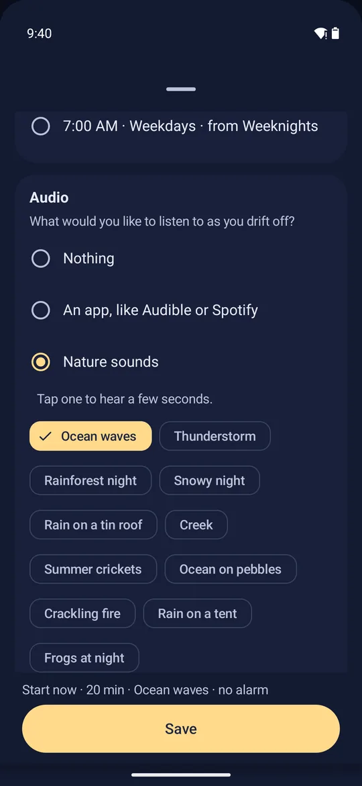
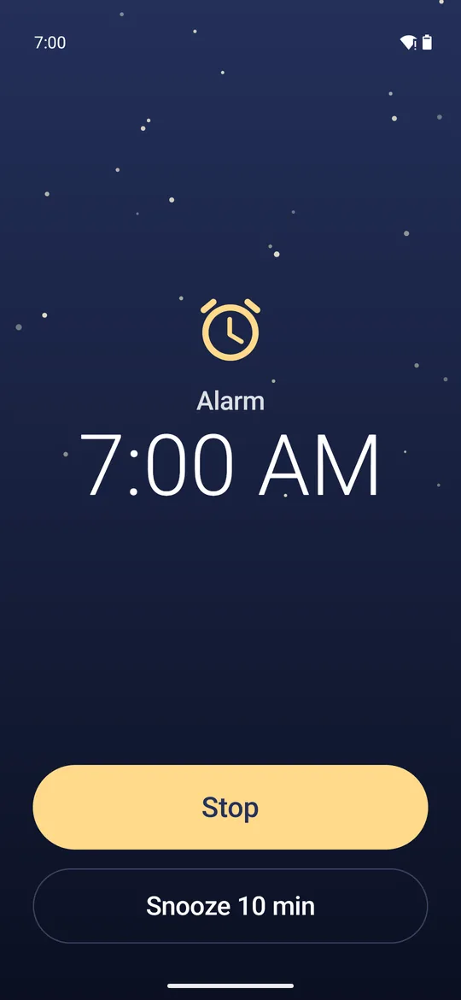
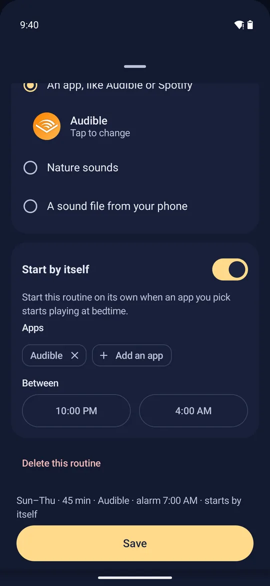
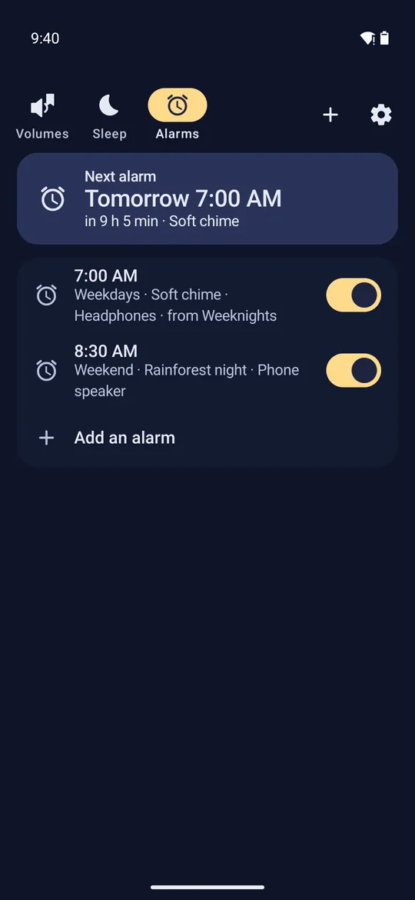
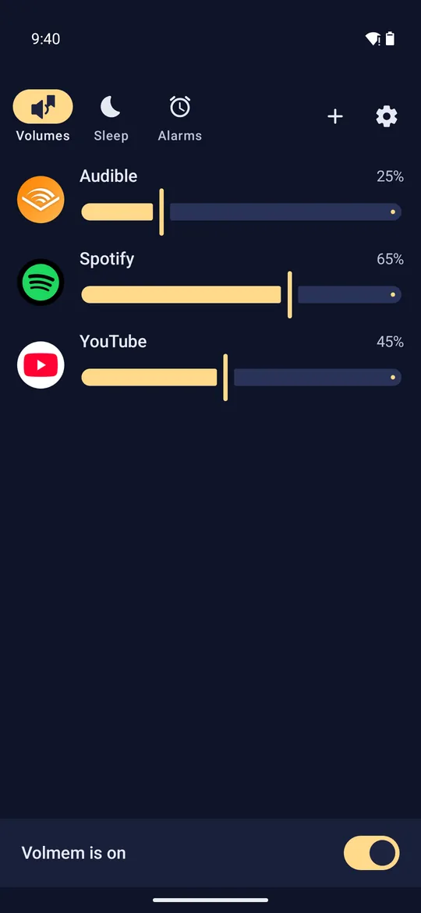

Volmem press kit
Volmem is a sleep timer and alarm for Android: your audiobook or music fades out and pauses once you're asleep, the alarm can ring in your earbuds only, and it keeps a volume for each app.
Updated 6 October 2026. The pictures and clips on this page are free to use in coverage of Volmem.
In short
The facts
- Runs onAndroid 10 and newer. Android only; there is no iPhone version.
- LanguageEnglish only for now.
- PriceFree to start. "Unlock everything" is $2.99, paid once through Google Play (the US price; Google Play shows the local price in other countries). No subscription.
- Free, foreverThe quick timer, one routine, one alarm, all 11 nature sounds, your own sound files, Spotify links, Start by itself, fade out, home-screen widgets, light or dark theme, volumes for 3 apps, and Mute during Do Not Disturb.
- Unlock everythingUnlimited routines and alarms, unlimited apps on the Volumes page, a separate volume for each Bluetooth device, and scheduled volumes by time of day and day of the week.
- PrivacyNo ads, no account, no internet permission, no data collected.
- Where it isIn a closed test on Google Play. It is not yet public. To install it, join the test: https://play.google.com/apps/testing/com.rickymcdaniel.volmem
- Websitehttps://volmem.rickymcdaniel.net/
- Made byRicky McDaniel, one person, in the US. rickymcdaniel.net
What it does
Tap Start. Fall asleep. It turns itself off.
- Quick timer. Pick the minutes on the moon, from 1 minute to 12 hours, and tap Start.
- Fade out, then pause. When the time is up, the sound gets quieter over 15 seconds to 3 minutes, then pauses, so you don't lose your place.
- Routines. A timer, a sound and an alarm saved together, like "Weeknights" or "Nap". Set nights, or start one with one tap. A routine can also start by itself when your book or music begins playing in the bedtime hours you choose.
- Sounds to fall asleep to. Your audiobook or music app, a Spotify song or playlist link, 11 built-in nature sounds (ocean waves, thunderstorm, rain on a tin roof, crickets, a crackling fire and more), or a sound file from your phone.
- Alarms. Ring in your earbuds or headphones only, on the phone's speaker, or on a Bluetooth speaker you choose. They start quiet and get louder, and Stop and Snooze fill the screen over the lock screen.
- A volume for each app. Audible quiet, Spotify louder, switched for you as you change apps. Each Bluetooth device keeps its own.
- Light, dark, or as your phone is. In Settings.
Screenshots
Eight screenshots
Phone screenshots, 540 × 1170 pixels, WebP. They are free to use in coverage of Volmem. Tap one to open it full size.


Open full size


Open full size


Open full size


Open full size


Open full size


Open full size


Open full size


Open full size
Icon and artwork
Icon and artwork
Free to use in coverage of Volmem.
App icon, SVG
Any size. icon.svg

App icon, PNG
192 × 192 pixels. icon-192.png


Video clips
Eight short screen recordings
1080×2340, no sound, free to use in coverage of Volmem.
- sleep-page.mp4The Sleep page: the quick timer and three routines.
- quick-timer.mp4Adding minutes on the moon, then Put me to sleep.
- fade-and-pause.mp4The sound fading out and pausing when the time is up. Sped up.
- routine-editor.mp4A routine: nights, timer, fade, alarm, and what plays.
- nature-sounds.mp4The 11 built-in sounds.
- alarm-ringing.mp4The alarm over the lock screen: Stop or Snooze.
- volumes.mp4A volume for each app, switching by itself.
- theme.mp4Light, dark, or as your phone is.
What testers say
“Very smart and convenient app. Having granular controls over Volume for different apps is helpful.”
Please get these right
- Media volume only. Volmem only changes your media volume. Your ringtone, notifications, calls and your phone's own alarms are never touched. Volmem's own alarms play through the media volume; that is how they can ring in earbuds only.
- It is not a mixer. Android has one media volume. Volmem changes it as you switch apps. It cannot play two apps at different volumes at the same moment.
- Casting is not supported. When Spotify or YouTube plays on a Chromecast or a cast speaker, the phone's media volume does not control that device, so there is no fade, and the pause may not reach it.
- Which apps it pauses. Audible, Spotify and most apps that play on your phone. If an app ignores the pause, Volmem keeps it silent until you pick up your phone.
- No waking to a chosen song or playlist. Android does not allow it from an alarm. A music-app alarm resumes what that app played last.
- Not "no permissions". The sleep timer needs nothing special. Start by itself and Volumes ask for their access only when you turn them on, each with a one-line reason. "No internet permission" is right.
- Android only. Android 10 and newer. There is no iPhone version.
- English only for now.
- Not yet public. Volmem is in a closed test on Google Play. Please write "in a closed test on Google Play", not "get it on Google Play", until it is public.
About the developer
Ricky McDaniel
Ricky McDaniel is a mechanical engineer who codes on the side. He is AuDHD (autistic and ADHD), and he works on Volmem alone. He built it for himself: Android's single media volume drove him nuts, and his audiobooks played all night. Volmem started as "volume memory", a volume for each app. The sleep timer and alarm came later.
Contact: ricky@rickymcdaniel.net · rickymcdaniel.net
Press may quote this page.